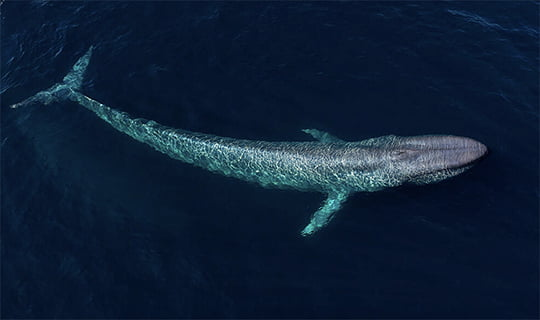

A baleia-azul (Balaenoptera musculus) é o maior animal conhecido a habitar o nosso planeta, com comprimentos que podem chegar a mais de 30 metros e peso de até 200 toneladas. Sua enorme língua sozinha pode pesar tanto quanto um elefante. Essas magníficas criaturas são encontradas em todos os oceanos do mundo, geralmente em águas profundas e longe da costa.
Apesar de seu tamanho colossal, as baleias-azuis são criaturas gentis e pacíficas, alimentando-se principalmente de pequenos crustáceos conhecidos como krill. Elas usam suas gigantescas barbatanas para filtrar o krill da água enquanto nadam lentamente com suas enormes bocas abertas.
Infelizmente, as baleias-azuis enfrentam várias ameaças, incluindo colisões com navios, poluição sonora causada pelo tráfego marítimo e captura acidental em redes de pesca. A caça ilegal no passado também reduziu drasticamente suas populações, mas medidas de conservação têm sido implementadas para proteger esses magníficos animais.
Apesar dos desafios que enfrentam, as baleias-azuis continuam a ser uma das maravilhas mais impressionantes da natureza, e sua preservação é crucial para manter o equilíbrio dos ecossistemas marinhos em todo o mundo.
